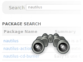
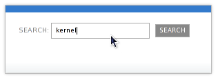
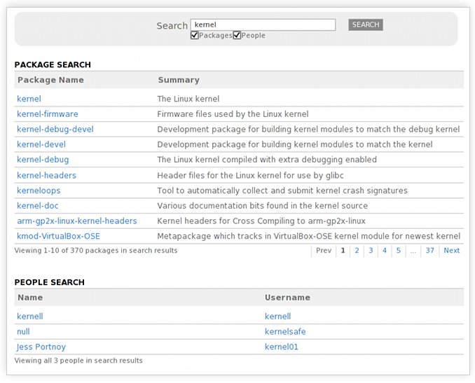

The Fedora Community Tour
Search Across Fedora
 Search across all of the packages that are part of Fedora and all of the community members who are part of Fedora in one go.
Search Tour Highlights:
Search from any page Back to Top 
There's a search box at the top of every page in Fedora Community, making search easily available no matter where you are within the application.
Refine search results based on category Back to Top
Fedora Community returns search results across all the different types of things it keeps track of, so you won't have to sift through results for users with the nick '133t kernel h4x0r' when you're really just looking for a particular kernel-related software package. You can turn particular categories of items to search through on or off.
Now that you've learned more about search in Fedora Community...
You can go back to the main tour page and learn more about other parts of Fedora Community.